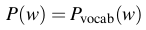
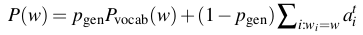
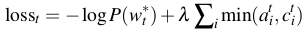

Get To The Point: Summarization with Pointer-Generator Networks
"What" part of the paper
Paper tries to solve two problems. First is pointer generator network for solving the problem of unknown out of vocabulary words. Second is coverage for solving the problem of repetition produced by the network while generating abstract summary.
"How" part of the paper
The baseline encoder-decoder model with attention above which pointer and coverage will be added is shown:

Attention score is calculated by taking the encoder hidden states and decoder hidden state at t. Usind the attention scores we get a context vector h*, for decoder step t. Concatenation of context vector and decoder hidden state at t is used to predict the output at t. The attention equations for above baseline model is given below.
The output token probability is equal to the above probability.
Pointer-Generator Network is added so as to increase the output vocabulary. In addition to the output vocabulary in baseline model, it will also have the ability to predict words from the source text itself even if the words are not present in ouput vocab(example names, dates, numbers, etc). This is kind of like copying words directly from the source text to the output while generating summary. Note that the attention The model is shown below.
A generation probability is introduced in order to give the probability whether the output token should be a token from output vocab or it should be a word copied from source text. This probability is computed which is based on decoder hidden state at t, context vector at t, and decoder input.
Attention scores are used as the weightage given to the words in source text as to which word should be copied from source text. The final probability distribution for the extended vocabulary is given by:
For OOV word, Pvocab(w) will be zero, similarly if a word does not appear in source text then Σ ati is zero.
Note that this is different from the probability distribution compared to above baseline model. This kind of distribution allows us to give probabilities to the word in source text as well.
The negative-log likelihood loss that we try to minimize is same in both the above model:
w*t is the target word at tth decoding step.
To solve the problem of repetition in summary generation Coverage Mechanism is used. In coverage mechanism, a coverage vector ct is maintained which is the sum attention distributions of all the previous decoder steps.
Intuitively, coverage vector give an idea as to what all words have been given attention. c0 is a zero vector as no word has been given attention.
Coverage vector is also introduced in the equation for calculating attention as follows:
This should avoid for attention mechanism to avoid repeatedly giving attention to one location.
A new coverage loss is also defined to penalize repeatedly attending to the same locations:
Finally, the new loss function now becomes:
